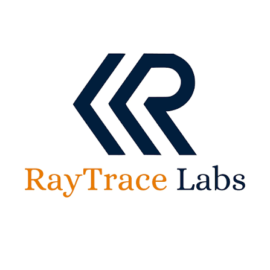

S. M. Khalid Bin Zahid
Embedded System Engineer

Passionate about Mobile Robotics, Embedded Systems, ROS-2, PCB Design, SLAM Based Localization & Navigation, GNSS Integration, Satellite Communication, AI & ML and Computer Vision.

📍 Rajshahi, Bangladesh